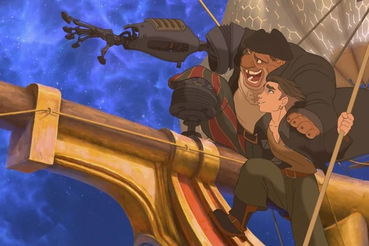
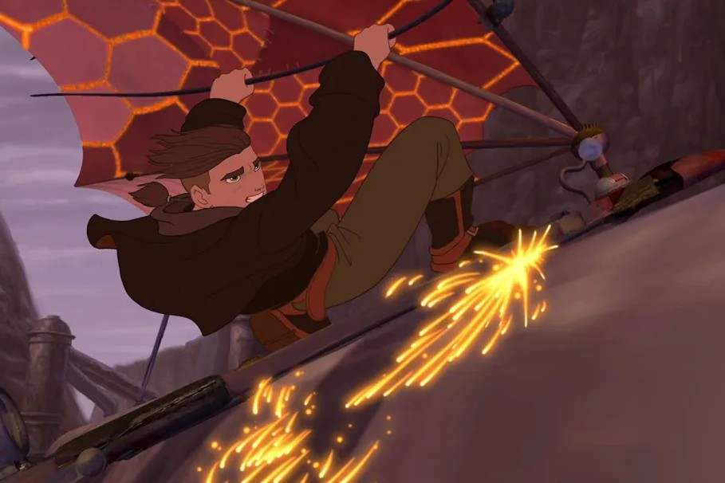

Treasure Planet (2002) is an underrated, hidden gem of an animated movie. You can watch the trailer here.
This is the movie synopsis by Rotten Tomatoes:
The legendary "loot of a thousand worlds" inspires an intergalactic treasure hunt when 15-year-old Jim Hawkins stumbles upon a map to the greatest pirate trove in the universe in Walt Disney Pictures' thrilling animated space adventure, "Treasure Planet." Based on one of the greatest adventure stories ever told - Robert Louis Stevenson's "Treasure Island" - this film follows Jim's fantastic journey across a parallel universe as a cabin boy aboard a glittering space galleon.
It's one of those movies that is rather unknown because it did poorly on release. But for anyone who does know about it though? You better believe that they we absolutely adore it and will talk highly about it whenever possible.
There's a lot of things to love and remark about this movie, but here are some of my personal favorites:
Needless to say, I highly recommend giving Treasure Planet (2002) a watch.
I actually watched this movie around 2 years ago and absolutely loved it then. Eventually though, it stopped being at the front of my mind. Semi-recently, my friend and I were looking for a movie to watch in Tagalog dub. We're both Filipinos and had previously watched Kpop Demon Hunters (2025) in Tagalog because I had missed my home language. It was really fun. This time, I discovered a Tagalog version of Treasure Planet's main song.
And I reacted totally normally. Totally. I am a normal, calm person.
The song felt natural in Tagalog instead of forcefully translated. It hyped me up to watch the full movie like that, so we did. Rewatching Treasure Planet reminded me why I loved it so much; having it in my home language made it hit different and hit harder than the first time. And so: the return of my obsession.
Anyways, here are the lyrics of the movie's theme song "I'm Still Here" in both languages:
[Verse 1]
I am a question to the world
Not an answer to be heard
Or a moment that's held in your arms
And what do you think you'd ever say?
I won't listen anyway, you don't know me
And I'll never be what you want me to be
[Verse 2]
And what do you think you'd understand?
I'm a boy, no, I'm a man
You can't take me and throw me away
And how can you learn what's never shown?
Yeah, you stand here on your own
They don't know me 'cause I'm not here
[Chorus]
And I want a moment to be real
Wanna touch things I don't feel
Wanna hold on and feel I belong
And how can the world want me to change?
They're the ones that stay the same
They don't know me, but I'm still here
[Verse 3]
And you see the things they never see
All you wanted I could be
Now you know me and I'm not afraid
And I wanna tell you who I am
Can you help me be a man?
They can't break me as long as I know who I am
[Bridge]
They can't tell me who to be
'Cause I'm not what they see
Yeah, the world is still sleepin'
While I keep on dreaming for me
And their words are just whispers
And lies that I'll never believe
[Chorus]
And I want a moment to be real
Wanna touch things I don't feel
Wanna hold on and feel I belong
And how can they say I never change?
They're the ones that stay the same
I'm the one now 'cause I'm still here
[Outro]
I'm the one 'cause I'm still here
I'm still here
I'm still here
[Verse 1]
Sa mundo'y tila tanong lang
'Di sagot sa anuman
'Di saglit na 'yong madarama
Kaya anong nais sabihin?
Sakin 'di nakikinig, 'di kilala
At tiyak 'yong hangarin ay 'di gagawin
[Verse 2]
Ako'y kaya bang intindihin?
Bata bang maituturing
Basta 'wag lang maisantabi
At kung mag-isa ay kaya bang
Matutunan, 'di alam
Bakit parang walang saysay?
[Chorus]
'Sang saglit lamang na tunay
Tao ma'y sa saya't lumbay
Magkaroon ng saysay sa iba
At bakit kailangang magbago?
Sila ang 'di matuto
Maging tao na may saysay
[Verse 3]
'Kaw, tangi lang nakapansin
Gagawin 'yong hangarin
Nakilala, walang pangamba
Sayo nais lang na magtapat
Magpatulong ng sapat
'Di mahina, basta loob ay matatag
[Bridge]
Iba'y 'di ko susundin
Iba sa paningin din
Ang mundo'y natutulog
Ako'y nangangarap parin
At kanyang salita ay
Kasinungalingan sakin
[Chorus]
'Sang saglit lamang na tunay
Tao ma'y saya't lumbay
Magkaroon ng saysay sa iba
At bakit kailangang magbago?
Sila ang 'di matuto
Maging tao na may saysay
[Outro]
Tao na, na may saysay
May saysay
May saysay
(While we're here, give this song cover by Lumie in YouTube a listen, too. It's an extended cinematic version of "Jinu's Lament" from Kpop Demon Hunters (2025). Lumie has an incredible and powerful voice that I think more people should hear.)